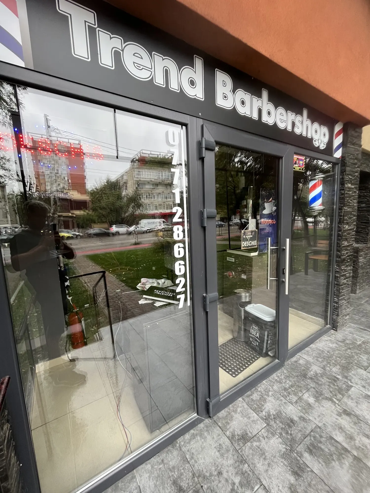
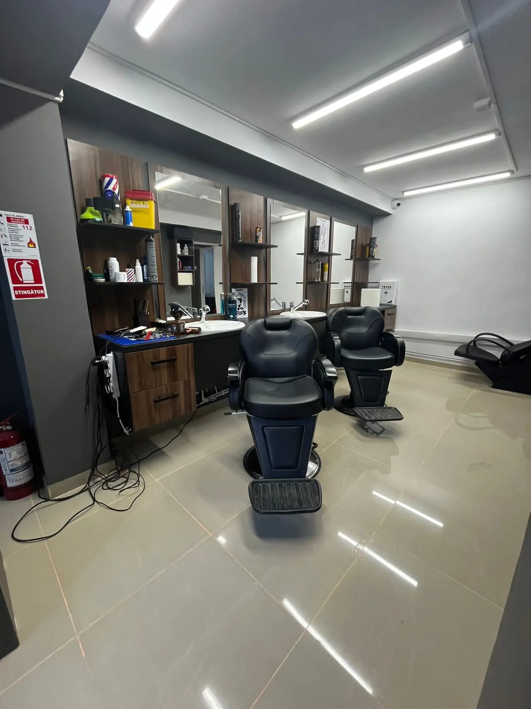
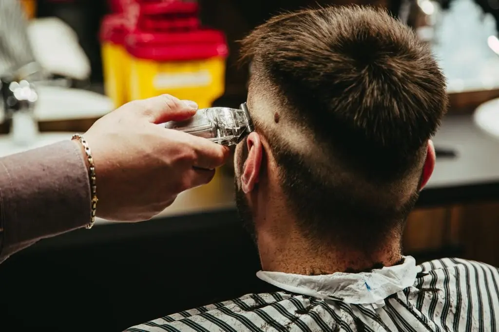
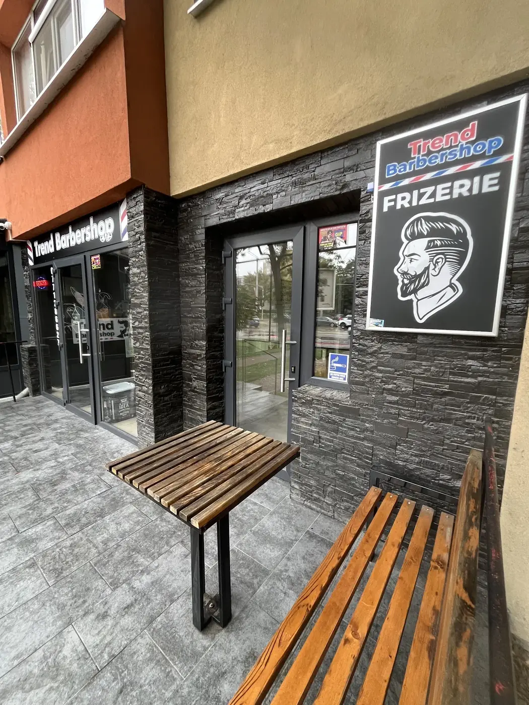
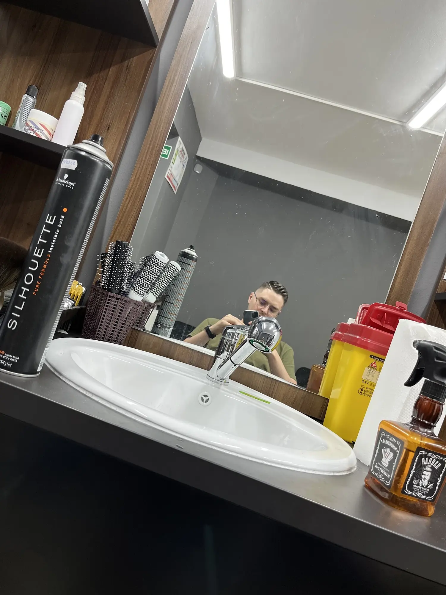
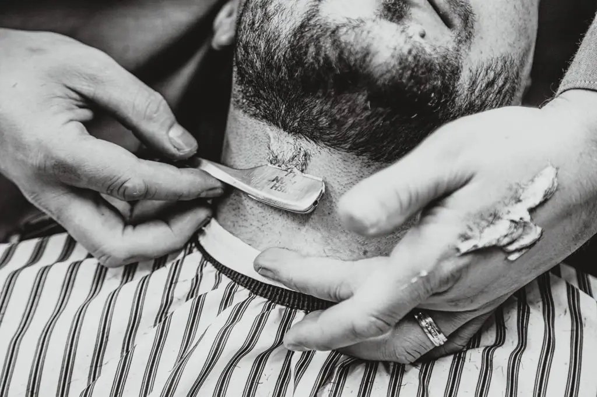
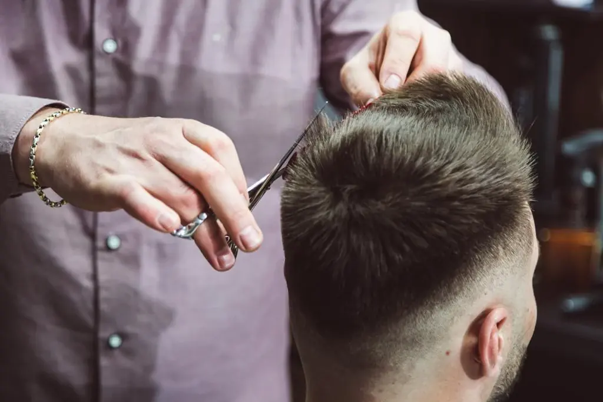
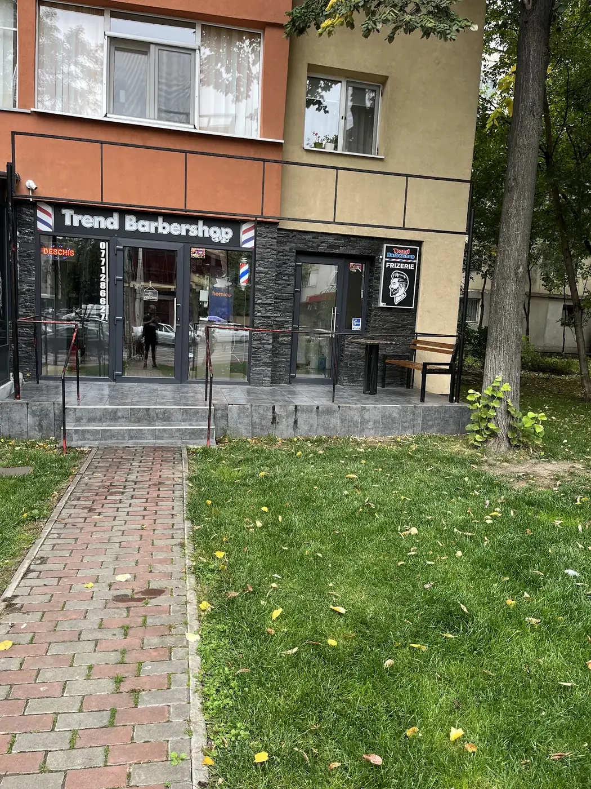

{{Trage o carte.|Pick a card.|Tire uma carta.}}{{Tunsoarea pe care o vrei, făcută pe Nicolina.|The cut you want, done on Nicolina.|O corte que quer, feito na Nicolina.}}
{{Fade, crop, clasic cu foarfeca, barbă cu brici. Răsfoiește pachetul, alege-ți cartea și programarea pleacă scrisă — pe WhatsApp sau prin SMS.|Fade, crop, classic scissor cut, razor beard. Flip through the deck, pick your card and the booking goes out already written — by WhatsApp or SMS.|Fade, crop, clássico à tesoura, barba à navalha. Passe o baralho, escolha a sua carta e a marcação sai já escrita — por WhatsApp ou SMS.}}
{{Trei cărți pe masă.|Three cards on the table.|Três cartas na mesa.}}
{{Fără aplicații, fără conturi. Alegi, trimiți, frizerul îți confirmă ora.|No apps, no accounts. Pick, send, the barber confirms your time.|Sem apps, sem contas. Escolhe, envia, o barbeiro confirma a hora.}}
{{Tunsoarea|The cut|O corte}}
{{Trage cartea care seamănă cu ce vrei — sau scrie cu vorbele tale.|Pick the card closest to what you want — or say it in your own words.|Tire a carta mais parecida com o que quer — ou diga por palavras suas.}}
{{Ziua|The day|O dia}}
{{De luni până sâmbătă, 09–20. Duminica e închis.|Monday to Saturday, 09–20. Closed on Sundays.|De segunda a sábado, 09–20. Ao domingo está fechado.}}
{{Ora|The time|A hora}}
{{Alegi o oră; mesajul pleacă scris, iar frizerul îți răspunde cu confirmarea.|Pick a time; the message goes out written and the barber replies to confirm.|Escolhe uma hora; a mensagem sai escrita e o barbeiro responde a confirmar.}}
{{179 de recenzii pe Google.|179 reviews on Google.|179 avaliações no Google.}}
- {{Băieții tund bine — asta se repetă în aproape toate recenziile.|The lads cut well — that comes up in almost every review.|Os rapazes cortam bem — isso repete-se em quase todas as avaliações.}}
- {{Laurențiu e lăudat pentru atenția la detalii: se vede că îi place ce face.|Laurențiu gets praised for attention to detail: you can tell he enjoys it.|O Laurențiu é elogiado pela atenção ao detalhe: nota-se que gosta do que faz.}}
- {{Seriozitate și punctualitate: intri la ora stabilită.|Reliable and on time: you sit down at the time agreed.|Seriedade e pontualidade: senta-se à hora combinada.}}

{{Piatră neagră, stâlpi roșu-alb-albastru.|Black stone, red-white-blue poles.|Pedra preta, postes vermelho-branco-azul.}}
Strada Nicolina 4A
Iași
- {{La parterul blocului, cu terasă și bancă de lemn la intrare.|Ground floor of the block, with a little terrace and a wooden bench by the door.|No rés-do-chão do prédio, com esplanada e banco de madeira à porta.}}
- —
{{Tot pachetul, întins pe masă.|The whole deck, spread on the table.|O baralho todo, espalhado na mesa.}}
{{Întoarce o carte ca să vezi cum arată la noi pe scaun. Prețul și durata le afli de la frizer.|Turn a card over to see it in our chair. Price and time come from the barber.|Vire uma carta para ver como fica na nossa cadeira. Preço e duração, pergunte ao barbeiro.}} {{prețuri de confirmat|prices to be confirmed|preços a confirmar}}
{{Tunsoare, zi, oră. Gata.|Cut, day, time. Done.|Corte, dia, hora. Pronto.}}
{{Mesajul se scrie singur în dreapta. Îl trimiți pe WhatsApp sau prin SMS, iar frizerul îți confirmă ora.|The message writes itself on the right. Send it by WhatsApp or SMS and the barber confirms your time.|A mensagem escreve-se sozinha ao lado. Envie por WhatsApp ou SMS e o barbeiro confirma a hora.}}
{{Scaune negre, oglinzi mari, lumină albă.|Black chairs, big mirrors, white light.|Cadeiras pretas, espelhos grandes, luz branca.}}
{{O frizerie de cartier pe Nicolina, cu ușa de sticlă și bancă de lemn afară.|A neighbourhood barbershop on Nicolina, with a glass door and a wooden bench outside.|Uma barbearia de bairro na Nicolina, com porta de vidro e banco de madeira lá fora.}}

{{Băieții de pe Nicolina.|The lads on Nicolina.|Os rapazes da Nicolina.}}
{{Clienții îl numesc pe Laurențiu pentru atenția la detalii. Restul echipei, cu nume și program, vine aici:|Clients name Laurențiu for his eye for detail. The rest of the team, with names and shifts, goes here:|Os clientes falam do Laurențiu pela atenção ao detalhe. O resto da equipa, com nomes e horários, entra aqui:}} {{de confirmat|to be confirmed|a confirmar}}
- {{Mașină, foarfecă, brici, pieptene — cele patru „culori” ale pachetului.|Clippers, scissors, razor, comb — all four suits of the deck.|Máquina, tesoura, navalha, pente — os quatro naipes do baralho.}}
- {{Deschis luni–sâmbătă, 09–20, inclusiv sâmbăta toată ziua.|Open Monday–Saturday, 09–20, Saturdays all day too.|Aberto de segunda a sábado, 09–20, sábado incluído.}}
- {{Telefonul e scris pe geam: 0771 286 627.|The number’s on the window: 0771 286 627.|O número está no vidro: 0771 286 627.}}
{{Pe scaun și la ușă.|In the chair and at the door.|Na cadeira e à porta.}}






{{Strada Nicolina 4A.|Strada Nicolina 4A.|Strada Nicolina 4A.}}
{{Luni–sâmbătă 09–20. Duminica închis.|Monday–Saturday 09–20. Closed on Sundays.|Segunda a sábado 09–20. Domingo fechado.}}
{{Program|Opening hours|Horário}}
{{Telefon|Phone|Telefone}}
Instagram / Facebook: {{de confirmat|to be confirmed|a confirmar}}